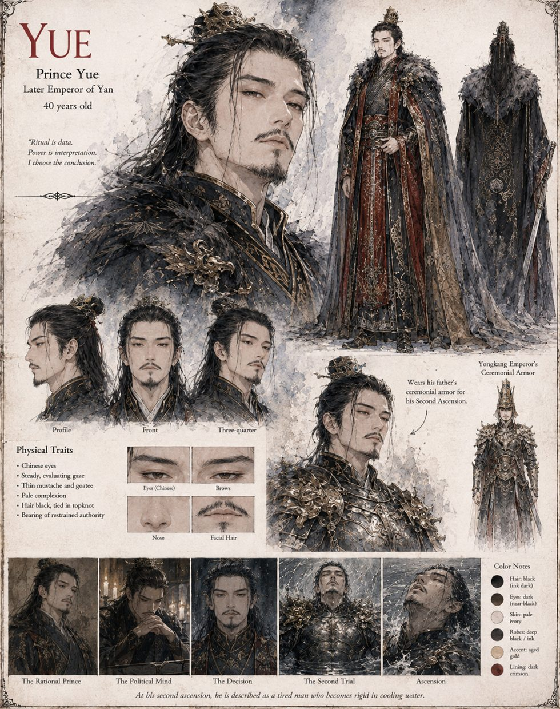

Yue
Prince Yue · third son of the Yongkang Emperor · later Emperor Yue · 40 years old
Third among the Yongkang Emperor's sons, and the one man at court who goes looking for Mei Suwen in the archive to ask not what the alchemists say the water means, but what it does. He listens, asks sharper questions than she expected, and sits through a whole session drinking a specific bitter tisane his mother once brewed for him during a childhood illness, which no one since has ever managed to make correctly. He argues his father out of the Solstice Trial on pure strategic grounds and is dismissed. His daughter Wan-er is the one person in the palace he has least often found time to notice.
When his father dies in the water, Yue takes the throne against the court's plain expectation and turns the Second Trial into a purge whose order he had written, in his own hand, across two years of ordinary court paranoia — long before any fish had entered any tank. He added Pei Rong last, underlined once, and left off Kang Yi on the plain arithmetic that a throne with no rivals and no soldiers to hold its walls is merely an inheritance for whichever warlord notices first. The arithmetic is sound. It is also, he discovers in the siege that follows, not the whole of the sum. When the last wall falls he wears his father's armor, and enters the water himself.
“Ritual is data. Power is interpretation. I choose the conclusion.”
Appears In

Related Subjects

Related Records

Emperor Yue enters the water in his father's armor as Yujing burns.